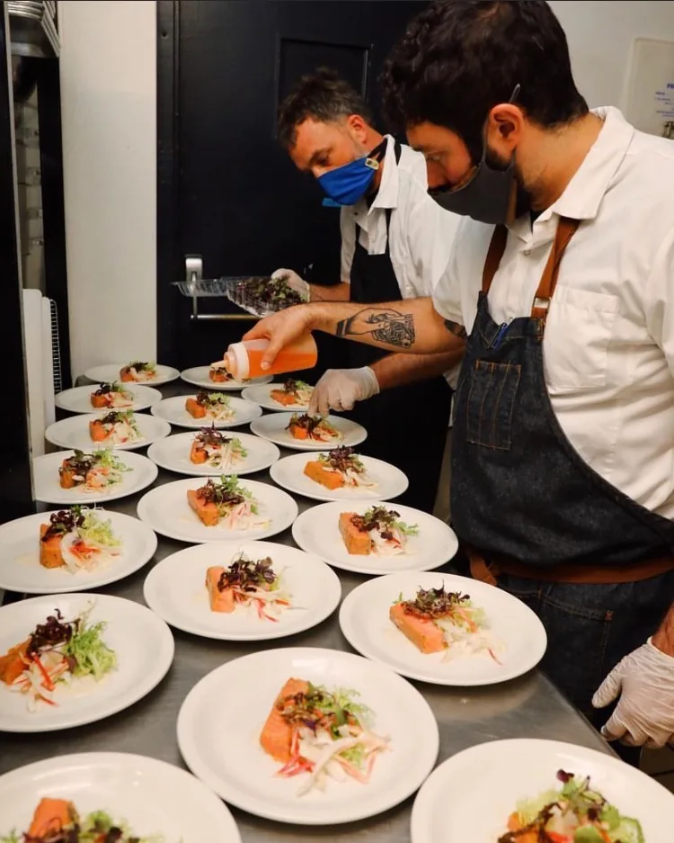

Culinary 1 & 2
Foundations, safety, sanitation, lab routines, knife skills, recipe execution, and professional kitchen habits.
Evidence: safety checks, lab performance, attendance, reflection.From classroom kitchen to career.
Greece Culinary Work-Based Learning connects classroom instruction, professional kitchen practice, school-based enterprise, and employer partnerships. Students build culinary competence, professional habits, and authentic experience as they move from classroom kitchen to career.

Students do not move through four isolated classes. Each stage adds responsibility, documentation, and readiness evidence for the next.
Foundations, safety, sanitation, lab routines, knife skills, recipe execution, and professional kitchen habits.
Evidence: safety checks, lab performance, attendance, reflection.Scratch production, menu planning, costing, event preparation, certification preparation, and customer awareness.
Evidence: production records, cost/yield work, technical skill.Leadership, station assignments, scheduling, enterprise records, event debriefs, and operational improvement.
Evidence: event analytics, team performance, leadership artifacts.The next structured opportunity: supervised workplace learning, employer feedback, portfolio evidence, and exit presentation after approval.
Evidence: verified hours, employer evaluation, portfolio.Culinary Passport and Gateway System: readiness is accumulated through observable evidence rather than assumed from interest alone.
Student-Run Culinary Enterprise and Event Analytics: catering, pop-ups, and school-based enterprise turn production into measurable learning.
Senior Cooperative Experience and Portfolio: external placement is positioned as a capstone extension, not a claim that placement is already operating.